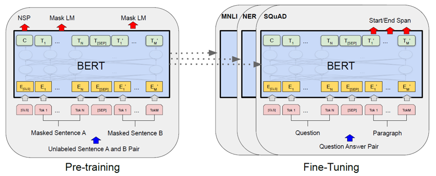
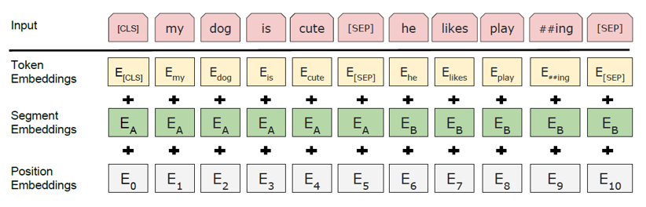
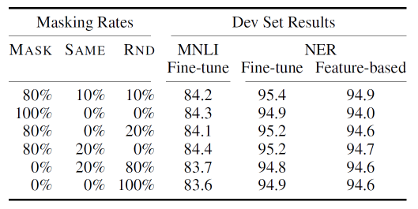
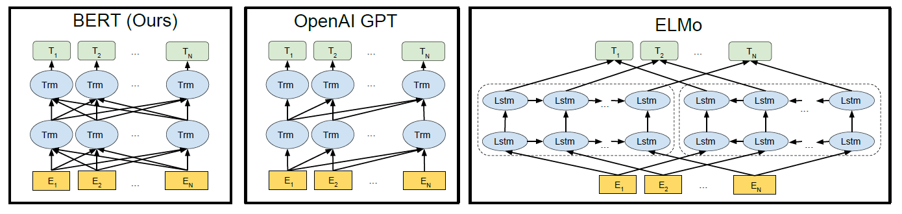
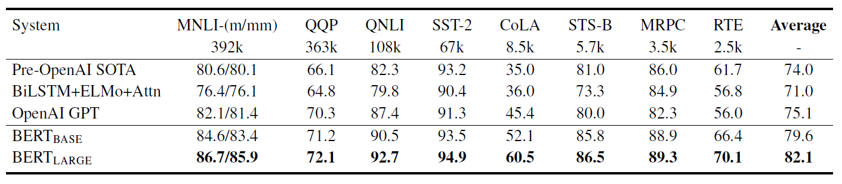
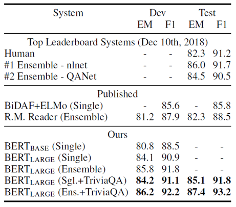
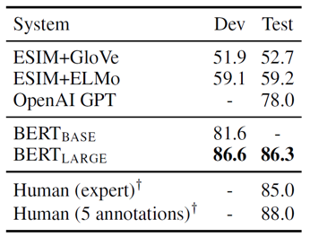
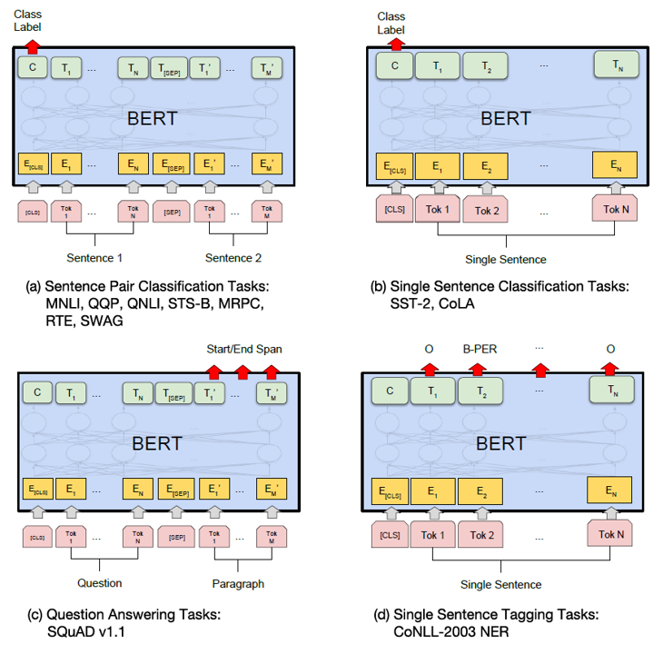
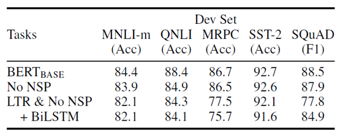
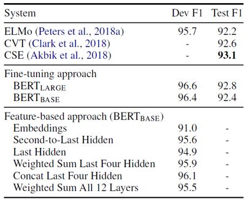

BERT - Pretraining of Deep Bidirectional Transformers for Language Understanding 리뷰

오늘 소개드릴 논문은 Google AI Language에서 2019년 arxiv에 발표한 Bert: Pre-training of deep bidirectional transformers for language understanding 논문에 대한 리뷰입니다.
이 논문은 Transformer Encoder 구조를 활용하여 자연어에 대한 representation을 pre-training 하였습니다. Unsupervised learning 방식으로 학습을 진행하기 위해 Masked Language Model, Nest Sequence Prediction의 두 가지 학습 방식을 이용하였으며, 11개의 자연어 학습 능력 평가 지표에서 SOTA를 달성했다고 합니다.
그럼 시작하겠습니다!
Feature-based and Fine-tuning
언어 모델을 pre-training 방식으로 학습하여 여러 가지 task에 적용하는 것은 효율성과 성능의 측면에서 우수했기 때문에 자연어 분야의 학습 전략으로 널리 활용되어 왔습니다. 모델을 pre-training 한 뒤에, task에 알맞게 이용하는 방식에는 크게 두 가지가 있습니다.
우선 Feature-based 방식은 pre-training 과정에서 각 단어에 대한 representation이 완벽하게 학습되었다고 가정하기 때문에, task-specific한 재학습 과정에서 pre-trained network의 parameter들을 바꾸지 않습니다. 대신에 pre-trainied network를 통해 얻은 Embedding vector를 task에 맞는 network에 통과시켜서 그 network의 parameter를 학습시키는 방향으로 task를 수행합니다. 반면에 Fine-tuning 방식은 downstream task를 학습할 때 pre-trained network의 parameter를 전부 조정해줍니다. Feature-based 방식에 비해 Network capacity가 커지기 때문에 일반적으로 높은 정확도를 보이지만, 계산량도 마찬가지로 늘어난다는 단점이 있습니다.
BERT는 Fine-tuning 방식을 기반으로 한 모델입니다. BERT를 각 downstream task 별로 어떻게 fine-tuning 했는지는 아래에서 자세히 다루겠습니다.
BERT Model Architecture
BERT는 Vaswani의 논문에서 발표된 Transformer의 Encoder 구조를 그대로 차용하였습니다. 뒤에서 자세히 설명드리겠지만 encoder의 self-attention 메커니즘은 병렬적으로 output을 생성하기 때문에, 두 방향(bidirectional)에 대한 추론을 통해 학습할 수 있습니다. 이는 BERT가 기존의 단방향 모델(OpenAI GPT) 또는 제약이 있는 양방향 모델(Bi-LSTM을 활용한 ELMo 등)보다 좋은 성과를 내는 데에 큰 기여를 하게 됩니다.
논문에서는 두 개의 모델을 공개하였는데, transformer layer 개수(12/24), hidden size(768/1024), self-attention head의 개수(12/16)에 따라 BERT base 모델과 BERT large 모델로 구분하였습니다. 각각의 parameter 개수는 110M/340M으로 BERT large가 약 세 배 정도의 capacity를 가지고 있습니다.
BERT는 단일 문장에 대한 downstream task 뿐만 아니라 두 개 이상의 문장에 대해서도 잘 작동할 수 있도록 input의 형태를 변형하였습니다. BERT의 input인 sequence는 한 개 또는 두 개 이상의 문장으로 구성되었습니다. 각 sequence은 항상 [CLS] token으로 시작되는데, 이 [CLS] token에 대한 output은 classification이 필요한 task의 경우 그 probability value로 이용하였습니다. 만약 한 sequence가 두 개 이상의 문장으로 구성된 형태라면 첫 번째 문장과 두 번째 문장 사이에 [SEP] token을 넣어서 구분해주었습니다. 또한, 두 문장을 구분하기 위한 추가적인 장치로 첫 번째 문장과 두 번째 문장에 서로 다른 sentence embedding을 더해주었습니다.
문장 구성에 대한 이해를 위해 downstream task 몇 가지를 예를 들어 설명하겠습니다. 만약 한 문장 안에 하나의 빈칸을 뚫어 그 단어를 예측하는 형태의 task는, input으로 하나의 문장이 들어가고 output으로는 한개의 단어가 나오면 충분할 것입니다. 하지만 어떤 문단과 그에 대한 질문의 답을 찾는 복잡한 언어 추론 형태의 task에서는, 질문이 input의 첫 번째 문장으로 들어가고 문단이 input의 두 번째 문장으로 들어가며 두 문장에 대한 명확한 구분이 필요할 것입니다. 또한 output으로는 질문에 대한 답에 해당되는 문단의 위치를 start/end token으로 얻을 수 있습니다.

결과적으로 BERT의 input representation은 token embedding, positional embedding, segment embedding의 합으로 구성됩니다. 우선 token embedding은 original input이 WordPiece Tokenization을 통해서 변환된 결과입니다. 또한 Transformer 논문에서 input에 순서 정보를 반영하기 위해서 활용한 positional embedding을 BERT에서도 마찬가지로 더해주었습니다. 마지막으로 두 개 이상의 문장이 input으로 들어올 수 있기 때문에 이를 구분하기 위한 segment embedding을 더해주었습니다.
Pre-training Strategy
BERT의 pre-training에는 중요한 두 가지의 unsupervised task가 활용되었습니다.
- Masked Language Model
자연어를 잘 이해하고 있는 모델을 얻기 위해서는, 양방향 학습을 하는것이 아주 중요하다고 알려져 있습니다. 하지만 이전까지 대부분의 모델들은 LTR(Left to Right) 또는 RTL(Right to Left)이라고 불리는 단방향 학습이나 Bi-LSTM의 output을 이어붙이는 불완전한 양방향 학습을 통해 얻어지곤 했었습니다. BERT는 Transformer 구조와 Masked LM을 활용하여 multi-layer의 완벽한 양방향 학습을 구현하였습니다.
Masked Language Model은 문장의 일부분을 masking token으로 치환해서 input으로 넣어주고, 해당 mask token을 원래 단어로 올바르게 복원하도록 학습하는 전략입니다. BERT에서는 문장의 모든 토큰 중 15%를 임의로 선택해 치환하였습니다.
하지만 이 과정에서 발생할 수 있는 문제가 있습니다. 학습 과정에서는 문장의 일부가 Mask 토큰으로 바뀌어 있는 input을 거의 대부분 보게 되지만, 실제 downstream task에 적용할 때는 Mask 토큰이 없는 문장을 주로 보게 됩니다. 따라서 training과 test 환경의 mismatch가 발생하여 성능이 저하됩니다.
이를 해결하기 위해서 논문에서는 15%의 확률로 선택된 토큰들에 대해서, (1) 80%는 [Mask] 토큰으로 변경하고, (2) 10%는 다른 임의의 토큰으로 변경하고, (3) 10%는 원래 토큰으로 그대로 두는 전략을 이용하였습니다. 이렇게 전혀 다른 토큰을 추가함으로써 모델의 학습이 방해될 수 있다는 지적에 대해, 저자는 전체 토큰의 1.5%의 만에 해당되기 때문에 큰 영향이 없을 것이라고 답했으며 실제 실험을 통해 증명하였습니다.

MLM에 대한 예시를 몇개 보여드리면, 기존의 “My dog is hairy”라는 문장에 대해 4번째 토큰이 선택되었다면, 해당 문장은 (1) 80%의 확률로 “My dog is [Mask]” (2) 10%의 확률로 “My dog is apple” (3) 10%의 확률로 “My dog is hairy” 로 변환될 수 있습니다.
BERT와 비교되는 유명한 pre-trained language representation 모델들은 단방향 학습이나 불완전한 양방향 학습을 통해 생성되었습니다. 아래는 BERT와 OpenAI GPT, ELMo의 모델 구조를 비교한 그림입니다.

위 그림에서 보이듯 완벽한 Bidirectional 구조를 가진 BERT와는 달리, OpenAI GPT는 Transformer decoder 구조를 차용한듯한 왼쪽에서 오른쪽을 향하는 단방향의 구조를 가지고 있습니다. 또한 ELMo 같은 경우에는, 왼쪽에서 오른쪽을 향하는 LSTM과 오른쪽에서 왼쪽을 향하는 LSTM의 output을 concatenate하여 양방향의 특성을 모두 가지는 representation을 생성하기 위한 구조를 보여주었습니다. 다만 두 LSTM의 결과를 이어붙인 것에 지나지 않기 때문에 완전한 양방향 학습이라고 보기는 어려우며, 계산량도 매우 많고 느리다는 단점이 있습니다. 따라서 Layer를 이어붙여서 깊게 쌓을 수 없고, 높은 성능을 보여주기 어렵게 됩니다.
- Next Sentence Prediction
Question and Answering(QA) 또는 Natural Language Inference(NLI) 등 몇 개의 downstream task는 두 문장 사이의 관계를 이해해야만 해결할 수 있습니다. 언어 모델이 문장 사이의 관계를 학습할 수 있게 하기 위해서 BERT는 NSP라는 학습 전략을 활용하였습니다. NSP는 corpus에서 A와 B라는 두 개의 문장을 고르되, 50%는 A와 B가 내용적으로 연결되게 선택하고 나머지 50%는 A와 B가 내용적으로 전혀 관련이 없게 선택합니다. 각각은 IsNext와 NotNext라는 binary output으로 labeling한 뒤 이를 예측하게끔 언어 모델을 학습시킵니다.
BERT의 NSP 정확도는 최종적으로 97~98%이었으며, 꽤나 높은 문장 간의 이해도를 보이게 됩니다. 이처럼 쉽고 간단한 NSP 학습 전략은 QA와 NLI 등의 downstream task 성능도 크게 향상시켜주었습니다.
- Pre-training data
BERT는 pre-training corpus로 800M 개의 단어로 구성된 BooksCorpus와 2,500M개의 단어로 구성된 English Wikipedia dataset을 활용했습니다. (list, table, header 등은 학습에서 제외하였습니다.)
Fine-tuning BERT
Pre-training된 BERT 모델은 fine-tuning을 통해 downstream task에 적용하였습니다. Fine-tuning은 BERT 모델에 task-specific한 input-output 데이터를 넣고 end-to-end로 모든 parameter를 학습하였습니다. Pre-training 과정에 비해 훨씬 더 가볍게 진행되었으며, Cloud TPU 1개로 1시간 정도 학습하였습니다.
논문에서는 BERT의 성능을 검증하기 위해 11개의 downstream task에 대해 fine-tuning을 진행했습니다.
- GLUE 
8개의 task로 구성된 The General Language Understanding Evaluation(GLUE) task에 대해서 SOTA의 성능을 보여주었다. 모든 GLUE task에 대해 32의 batch size로 3 epoch만큼 fine-tuning 해주었으며, [CLS] 토큰의 output을 마지막 classification layer의 input으로 활용하여 K개의 class에 대해 분류했습니다.
- SQuAD 
SQuAD는 The Stanford Question Answering Dataset의 약자로 100k개 이상의 질문-정답 쌍으로 구성되어 있습니다. 질문과 정답을 포함한 Wikipedia 문단을 input으로 넣으면, 문단 내의 정답 text 위치를 찾아내어야 합니다. BERT는 위에서 설명한 NSP 전략을 활용해 문장 사이의 관계를 이해하도록 학습되었기 때문에, SQuAD에 대해서도 SOTA의 성능을 보여줄 수 있었습니다.
SQuAD 2.0은 정답이 없을 확률에 대해서도 label이 되었는데, 이 또한 마찬가지로 BERT는 SOTA의 성능을 보여주었습니다.
- SWAG 
SWAG는 The Situations With Adversarial Generations의 약자로 113k개의 문장 쌍으로 구성되어 있습니다. 한 문장이 주어질 때, 뒤에 나오기에 적절한 문장을 4개의 보기 중에 선택하는 형태로 구성되었습니다. [CLS] 토큰을 활용하여 4개의 선택지에 대한 score를 얻어서 평가하였습니다. BERT는 SWAG 데이터셋에 대해서도 마찬가지로 SOTA의 성능을 보여주었습니다.

Ablation Studies
BERT의 성능은 다양한 downstream task들에서 SOTA의 수준으로 확인되었습니다. 그렇다면 앞에서 제안한 BERT의 어떤 특징들이 우수한 성능을 발휘할 수 있게 해준걸까요? 논문에서는 Ablation study를 통해 다양한 장치들의 역할을 분석하였습니다.
- Pre-training Strategies
BERT는 MLM과 NSP라는 두 개의 Task로 Pre-training 되었습니다. 논문에서는 각각의 task가 얼마나 중요한지를 보여주기 위해 NSP를 없애고 학습시켜보기도 하고, NSP를 없애고 단방향으로의(LTR) 학습을 진행해보기도 하였습니다.

NSP를 없애자 GLUE와 SQuAD의 성능이 동시에 크게 저하되었습니다. 문장 간의 이해도를 높이는 데 NSP가 중요한 역할을 하고 있으며, 일반적인 Language understanding에도 영향을 미치는 것으로 보입니다.
또한 MLM을 통한 bidirectional 학습에서 LTR의 단방향 학습으로 변경했을 때에는 SQuAD의 성능이 급격히 저하되었습니다. SQuAD는 단방향 토큰 추론에 대한 task가 아니기 때문에 방향성이 제한됨에 따라 성능이 저하되는 것으로 추측할 수 있을 것 같습니다. 저자는 이를 보완하기 위해서 Bi-LSTM 구조를 모델 위에 얹어서 학습했는데, SQuAD의 성능은 향상시켜주었지만 일반적인 GLUE 결과를 저하시켰습니다.
- Model Size
BERT 모델의 크기와 fine-tuning task의 정확도 간의 관계를 확인하기 위한 ablation study도 진행되었습니다. 다양한 layer 개수, hidden unit의 크기, attention head의 개수의 BERT 모델들이 같은 조건 하에서 학습되었습니다. 결과는 널리 알려진 바와 같이 모델의 크기가 커질수록 모델 capacity가 커지며 성능이 향상되었습니다. 또한 큰 capacity의 모델을 pre-training 한 경우에는 아주 작은 scale의 task에 대해서도 좋은 성능을 보여주었습니다. 이는 task의 scale이 아주 작은 경우에 BERT의 효용성이 높다는 의미인데, task-specific한 모델을 설계해서 scratch부터 학습하는 것보다 충분한 pre-training을 통해 얻은 general representation을 initial parameter로 fine-tuning을 하는 것이 더 좋은 성능을 보여주기 때문입니다.
- Feature-based BERT
기존의 BERT는 downstream task에 대해 fine-tuning 방식으로 학습하였습니다. 하지만 fine-tuning 방식은 모델의 구조를 크게 바꾸지 않기 때문에 모든 경우의 downstream task를 represent하기 어렵고, 모든 parameter를 update하므로 계산량도 많다는 단점이 있습니다. 때문에 ELMo와 같은 feature-based approach로 BERT를 활용했을 때 결과가 어떨지에 대해 ablation study가 진행되었습니다.

각 단어의 Entity를 찾는 NER task에 대해 다양한 방식의 feature-based 학습을 진행했는데, SOTA와 비슷한 성능을 보여주었습니다. 이로써 BERT는 fine-tuning과 feature-based approach에 모두 효과적이라는 것이 확인되었습니다.
Summary
BERT는 다양한 NLP task에 대해 SOTA를 달성하면서, 발표 직후부터 지금까지 NLP 분야에 많은 영향력을 끼치고 있는 모델입니다. Bidirectional training을 위해 기존에 활용되지 않던 Masked Model Language를 도입했고, Next Sentence Prediction task를 통해 문장 사이의 관계도 효과적으로 학습하였습니다. 최근까지도 BERT를 기반으로 하거나 BERT를 뛰어넘기 위해 도전하는 논문들이 계속해서 출간되고 있습니다.
BERT를 읽다 보니 NLP 관련 연구들에 관심이 더 생기는 것 같습니다. 시간이 되면 NLP 관련 논문들을 더 리뷰해보겠습니다. 읽어주셔서 감사합니다 :)
참고 문헌 및 출처